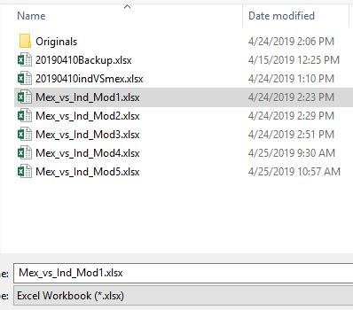
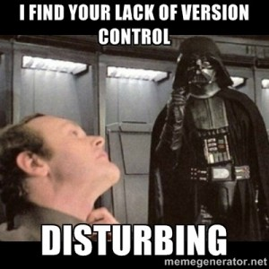
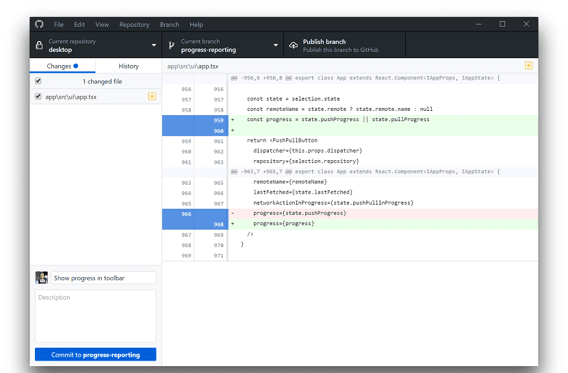
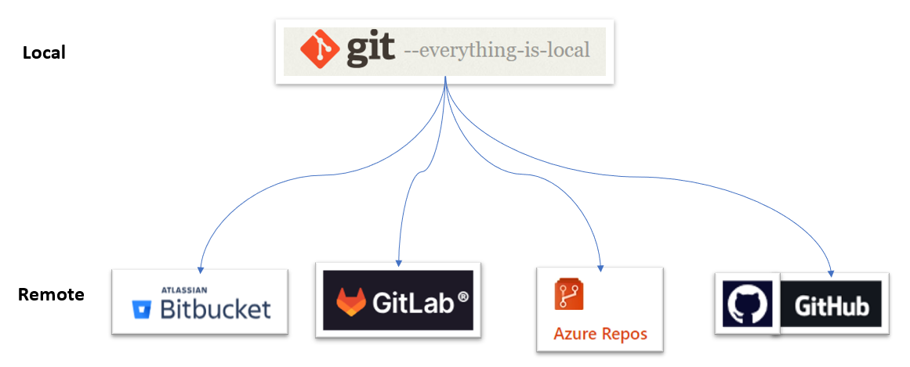

Git, GitHub, Pull Requests, and code reviews
Why use version control?

Why use version control?

Why use version control?

- Keep track of changes
- Backup and restore
- Transparency
- Easier collaboration
- Improved code quality
- Allow experimentation
Centralized version control
- Single source with the entire history
- Local copy with latest version . . .
- Examples: SVN, Surround
Distributed version control
- Local copy has the entire history
- Commit changes to code offline
- Authorative source (origin) . . .
- Examples: Git, Mercurial
Git
Git is a powerful tool for managing code changes and collaborating with others on a project.
. . .
Use Git from the command-line, or a graphical user interface.
. . .
> git add foo.py
> git commit -m "Fixed"
> git push

Basic Git commands
git add: adds a file to the staging areagit commit: creates a new commit with the changes in the staging areagit status: shows the current status of your repositorygit log: shows the commit history of your repositorygit stash: temporarily save changes that are not ready to be committed
Working with remote repositories
git clone: creates a copy of the codebase on your local machine.git push: pushes changes back to the remote repository.git pull: pulls changes from the remote repository.

Git hosting platforms

GitHub
- Git repository hosting service
- Collaborate with others on codebase
- Fork a repository to work on your own version
- Pull requests for code review and merging changes
- Issue tracking and project management tools
- GitHub Pages for hosting websites
Demo 1
- Create a new repository on GitHub
- Clone the repository to your local machine
- Add a file
- Commit the file
- Push the file to GitHub
Branching and Merging
- A branch is a separate version of your code that you can work on independently from the main branch.
git merge: merges changes back into the main branch (we will do this from GitHub)
Pull request workflow

- Create a branch
- Make changes
- Create a pull request
- Review
- Merge
- Clone a repository to work on a copy (optionally: fork first)
- Create a branch for each new feature or fix
- Commit changes and push to remote repository
- Open a pull request to propose changes and request code review
- Merge changes back into the main branch
Demo 2
- Create a new branch
- Make changes
- Commit the file
- Create a pull request
- Get feedback and merge changes
Best practices
- Commit often
- Use descriptive commit messages
- Keep pull requests small and focused
- Use “issues” to track work
- Review code regularly
- Use .gitignore to exclude files
- Don’t commit data (only very small test data)
- Don’t commit passwords
Gettings started
- Create a GitHub account
- Install GitHub Desktop (includes Git)
- Create a new repository on GitHub
Resources
Word list
- Clone
- making a local copy of a remote repository on your computer.
- Remote
- a reference to a Git repository that is hosted on a remote server, typically on a service like GitHub.
- Commit
- a record of changes made to a repository, including the changes themselves and a message describing what was changed.
- Stage
- selecting changes that you want to include in the next commit.
- Push
- sending changes from your local repository to a remote repository.
- Pull
- retrieving changes from a remote repository and merging them into your local repository.
- Branch
- a separate line of development that can be used to work on new features or bug fixes without affecting the main codebase.
- Pull request
- a way to propose changes to a repository by asking the repository owner to “pull” in the changes from a branch or fork.
- Stash
- temporarily save changes that are not ready to be committed (bring them back later when needed).
- Merge
- the process of combining changes from one branch or fork into another, typically the main codebase.
- Rebase
- a way to integrate changes from one branch into another by applying the changes from the first branch to the second branch as if they were made there all along.
- Merge conflict
- when Git is unable to automatically merge changes from two different branches, because the changes overlap or conflict.
- Checkout
- switching between different branches or commits in a repository.
- Fork
- a copy of a repository that you create on your own account, which you can modify without affecting the original repository.
Summary
- Version control is a tool for managing changes to code
- Git is a version control system (software)
- GitHub is a platform for hosting and collaborating on Git repositories
- GitHub Desktop is a GUI for Git (and GitHub)
- Pull requests are a way to propose changes to a repository